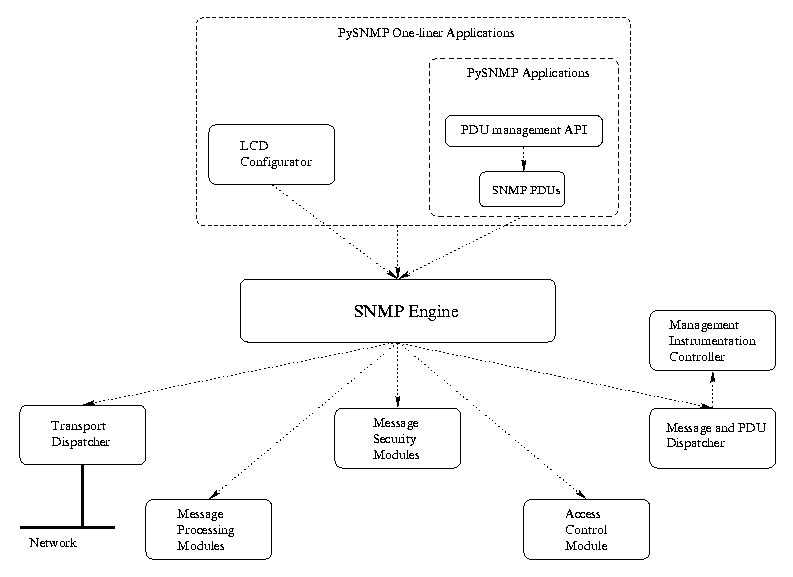

PySNMP tutorial
by Ilya Etingof, Nov 2007
Table of contents
1. Network management basics
As networks become more complex, in terms of device population,
topology and distances, it has been getting more and more important
for network administrators to have some easy and convenient way for
controlling all pieces of the whole network.
Basic features of a network management system include device information
retrieval and device remote control. Former often takes shape of gathering
device operation statistics, while latter can be seen in device remote
configuration facilities.
For any information to be exchanged between entities, some agreement on
information format and transmission procedure should be settled beforehand.
This is what is conventionally called a Protocol.
Large networks nowdays, may host thousands of different devices.
To benefit network manager's interoperability and simplicity, any
device on the network should carry out most common and important management
operations in a well known, unified way. Therefore, an important feature
of a network management system would be a Convention on
management information naming and presentation.
Sometimes, management operations should be performed on large number of
managed devices. For a network manager to complete such a management round
in a reasonably short period of time, an important feature of a network
management software would be Performance.
Some of network devices may run on strictly limited resources what require
another property of network management facility:
Low resource consumption.
In practice, the latter requirement translates into low CPU cycles and
memory footprint for management software aboard device being managed.
As networking becomes a more crucial part of our daily lives, security
issues have become more apparent. As a side note, even Internet
technologies, having military roots, did not pay much attention to security
initially. So, the last key feature of network management appears to be
Security.
Data passed back and forth through the course of management operations should
be at least authentic and sometimes hidden from possible observers.
All these problems were approached many times during about three decades
of networking history. Some solutions collapsed over time for one reason or
another, while others, such as Simple Network Management Protocol (SNMP),
evolve into an industry standard.
1.1 SNMP management architecture
The SNMP management model includes three distinct entities -- Agent, Manager
and Proxy talking to each other over network.
Agent entity is basically a software running somewhere in a networked device
and having the following distinguishing properties:
- SNMP protocol support
- Access to managed device's internals
The latter feature is a source of management information for Agent, as well
as a target for remote control operations.
Modern SNMP standards suggest splitting Agent functionality on two parts.
Such Agents may run SNMP for local processes called Subagents, which
interface with managed devices internals. Communication between Master
Agent and its Subagents is performed using a simplified version
of original SNMP protocol, known as AgentX, which is
designed to run only within a single host.
Manager entity is usually an application used by humans (or daemons) for
performing various network management tasks, such as device statistics
retrieval or remote control.
Sometimes, Agents and Managers may run peer-to-peer within a single entity
that is called Proxy. Proxies can often be seen in application-level
firewalling or may serve as SNMP protocol translators between otherwise
SNMP version-incompatible Managers and Agents.
For Manager to request Agent for an operation on a particular part of
managed device, some convention on device's components naming is needed.
Once some components are identified, Manager and Agent would have to agree
upon possible components' states and their semantics.
SNMP approach to both problems is to represent each component of a device
as a named object, similar to named variables seen in programming
languages, and state of a component maps to a value associated with this
imaginary variable. These are called Managed Objects in SNMP.
For representing a group of similar components of a device, such as network
interfaces, Managed Objects can be organized into a so-called
conceptual table.
Manager talks to Agent by sending it messages of several types. Message
type implies certain action to be taken. For example, GET
message instructs Agent to report back values of Managed Objects whose names
are indicated in message.
There's also a way for Agent to notify Manager of an event occurred to Agent.
This is done through so-called Trap messages. Trap message also
carries Managed Objects and possibly Values, but besides that it has an
ID of event in form of integer number or a Managed Object.
For naming Managed Objects, SNMP uses the concept of
Object Identifier. As an example of Managed Object,
.iso.org.dod.internet.mgmt.mib-2.system.sysName.0 represents
human-readable name of a device where Agent is running.
Managed Objects values are always instances of
ASN.1 types (such as Integer) or SNMP-specific subtypes
(such as IpAddress). As in programming languages, type has an effect of
restricting possible set of states Managed Object may ever enter.
Whenever SNMP entities talk to each other, they refer to Managed Objects whose
semantics (and value type) must be known in advance by both parties. SNMP Agent
may be seen as a primary source of information on Managed Objects, as they are
implemented by Agent. In this model, Manager should have a map of Managed
Objects contained within each Agent to talk to.
SNMP standard introduces a set of ASN.1 language constructs (such as ASN.1
subtypes and MACROs) which is called Structure of Management Information
(SMI). Collections of related Managed Objects described in terms of
SMI comprise Management Information Base (MIB) modules.
Commonly used Managed Objects form core MIBs that become part of SNMP standard.
The rest of MIBs are normally created by vendors who build SNMP Agents into
their products.
More often then not, Manager implementations could parse MIB files and
use Managed Objects information for names resolution, value type determination,
pretty printing and so on. This feature is known as MIB parser support.
1.2 The history of SNMP
First SNMP version dates back to 1988 when a set of IETF RFC's
were first published (
RFC1065,
RFC1066,
RFC1067
). These documents describe protocol operations
(in terms of message syntax and semantics), SMI and a few core MIBs.
The first version appears to be lightweight and easy to implement.
Although, its poor security became notorious over years (Security? Not My
Problem!), because cleartext password used for authentication (AKA
Community String) is extremely easy to eavesdrop and replay,
even after almost 20 years, slightly refined standard
(
RFC1155,
RFC1157,
RFC1212
) still seems to be the most frequent encounter in modern SNMP devices.
In effort to fix security issues of SNMPv1 and to make protocol faster for
operations on large number of Managed Objects, SNMP Working Group at IETF
came up with SNMPv2. This new protocol offers bulk transfers of Managed
Objects information (by means of new, GETBULK message payload), improved
security and re-worked SMI. But its new party-based security system turned
out to be too complicated. In the end, security part of SNMPv2 has been dropped
in favor of community-based authentication system used in SNMPv1. The result
of this compromise is known as SNMPv2c (where "c" stands for community) and
is still widely supported without being a standard (
RFC1902,
RFC1903,
RFC1904,
RFC1905,
RFC1906,
RFC1907,
RFC1908
).
The other compromise targeted at offering greater security than SNMPv1,
without falling into complexities of SNMPv2, has been attempted by
replacing SNMPv2 party-based security system with newly developed
user-based security model. This variant of protocol is known as SNMPv2u.
Although neither widely implemented nor standardized, User Based Security
Model (USM) of SNMPv2u got eventually adopted
as one of possibly many SNMPv3 security models.
As of this writing, SNMPv3 is current standard for SNMP. Although it's based
heavily on previous SNMP specifications, SNMPv3 offers many innovations but
also brings significant complexity. Additions to version 3 are mostly about
protocol operations. SMI part of standard is inherited intact from SNMPv2.
SNMPv3 system is designed as a framework that consists of a core, known
as Message and PDU Dispatcher, and several abstract
subsystems: Message Processing Subsystem
(MP), responsible for SNMP message handling,
Transport Dispatcher, used for carrying over messages,
and Security Subsystem, which deals with message
authentication and encryption issues. The framework defines
subsystems interfaces to let feature-specific modules to be plugged into
SNMPv3 core thus forming particular feature-set of SNMP system. Typical use
of this modularity feature could be seen in multiprotocol systems -- legacy
SNMP protocols are implemented as version-specific MP and security modules.
Native SNMPv3 functionality relies upon v3 message processing and User-Based
Security modules.
Besides highly detailed SNMP system specification, SNMPv3 standard also
defines a typical set of SNMP applications and their behavior. These
applications are Manager, Agent and Proxy (
RFC3411,
RFC3412,
RFC3413,
RFC3414,
RFC3415,
RFC3416,
RFC3417,
RFC3418
).
2. Programming with PySNMP
PySNMP stands for a pure-Python SNMP implementation. This software deals with
darkest corners of SNMP specifications all in Python programming language.
This paper is dedicated to PySNMP revisions from 4.1.x and up. Previous
PySNMP versions do not follow the architecture and interfaces described
in this tutorial.
From Programmer's point of view, the layout of PySNMP software reflects SNMP
protocol evolution. It has been written from ground up, from trivial SNMPv1 up
to fully featured SNMPv3. Therefore, several levels of API to SNMP
functionality are available:
-
The most ancient and low-level is SNMPv1/v2c protocol scope. Here
programmer is supposed to build/parse SNMP messages and their
payload -- Protocol Data Unit (PDU), handle protocol-level
errors, transport issues and so on.
Although considered rather complex to deal with, this API probably gives best
performance, memory footprint and flexibility, unless MIB access and/or
SNMPv3 support is needed.
-
Parts of SNMPv3 standard is expressed in terms of some abstract API to
SNMP engine and its components. PySNMP implementation adopts this abstract API
to a great extent, so it's available at Programmer's disposal. As a side
effect, SNMP RFCs could be referenced for API semantics when programming
PySNMP at this level.
This API is much more higher-level than previous; here Programmer would
have to manage two major issues: setting up Local Configuration Datastore
(LCD) of SNMP engine and build/parse PDUs. PySNMP system is
shipped multi-lingual, thus at this level all SNMPv1, SNMPv2c and SNMPv3
features are available.
-
At last, the highest-level API to SNMP functionality is available through the
use of standard SNMPv3 applications. These applications cover the most
frequent needs. That's why this API is expected to be the first to
start with.
The Applications API further simplifies Programmer's job by hiding
LCD management issues (contrary to SNMPv3 engine level). This API could be
exploited in a one-liner fashion, for quick and simple prototyping.
The following figure draws major components of PySNMP system along with
standard Applications.

These standard SNMP applications, such as GET/SET command generators and
responders or TRAP notificators and receivers, translate into a set of
classes designed by the Visitor pattern. Application classes
implement concrete SNMP operations in terms of specific PDU handling,
while SNMP Engine class acts as a Visitor. A single SNMP Engine can serve
many Applications of different types at the same time.
One of the design choices of SNMPv3 standard is to use a set of dedicated
Managed Objects for SNMP engine internal purposes. One reason for that
design involves making SNMP engine remotely configurable via SNMP.
These internally used Managed Objects are collectively called Local
Configuration Datastore (LCD). In PySNMP, all SNMP engine configuration
and statistics is kept in LCD. LCD Configurator is a wrapper aimed at
simplifying LCD operations. Technically, LCD Configurator is a set of
functions whose names clearly reflect their semantics.
SNMP Engine, on the above figure, is a Composite class holding references
to all components of SNMP system. Typical user application has a single
instance of SNMP Engine class possibly shared by many SNMP Applications
of all kinds.
Transport subsystem is used for sending SNMP messages to and accepting them
from network. The I/O subsystem consists of a an abstract Dispatcher and one
or more abstract Transport classes. Concrete Dispatcher implementation
is I/O method-specific, consider BSD sockets for example. Concrete Transport
classes are transport domain-specific. SNMP frequently uses UDP Transport
but others are also possible. Dispatcher/Transport classes are designed after
the Visitor pattern -- Transport instances are Dispatcher visitors. Transport
Dispatcher interfaces are mostly used by Message And PDU Dispatcher. However,
when using the SNMPv1/v2c-native API (the lowest-level one), these interfaces
would be invoked directly.
The rest of components are not normally accessed directly. They're mentioned
here for clarification purposes.
Message And PDU Dispatcher is a heart of SNMP system. Its main responsibilities
include dispatching PDUs from SNMP Applications through various subsystems
all the way down to Transport Dispatcher, and passing SNMP messages coming
from network up to SNMP Applications. It maintains logical connection with
Management Instrumentation Controller which carries out operations on Managed
Objects, here for the purpose of LCD access.
Message Processing Modules handle message-level protocol operations for present
and possibly future versions of SNMP protocol. Most importantly, these include
message parsing/building and possibly invoking security services whenever
required. All MP Modules share standard API used by Message And PDU Dispatcher.
Message Security Modules perform message authentication and/or encryption.
As of this writing, User-Based (for v3) and Community (for v1/2c) modules
are implemented in PySNMP. All Security Modules share standard API used by
Message Processing subsystem.
Access Control subsystem uses LCD information to authorize remote access to
Managed Objects. This is used when serving Agent Applications or Trap
receiver in Manager Applications.
2.1 One-line Applications
As of this writing, one-line Applications currently cover Manager-side
operations. Agent and Proxy roles could be implemented on top of
native Applications API.
There're two kinds of APIs to one-line Applications: synchronous and
asynchronous. Both are implemented within the
pysnmp.entity.rfc3413.oneliner.cmdgen module.
2.1.1 Synchronous One-line Applications
This is the simplest and the most high-level API to standard SNMP
Applications. It's advised to employ for singular and blocking
operations as well as for rapid prototyping.
All Command Generator Applications are implemented within a single class:
- class CommandGenerator([snmpEngine])
-
Create a SNMP Command Generator object.
Methods of the CommandGenerator class instances implement
specific request types.
- getCmd(
authData,
transportTarget,
*varNames
)
-
Perform SNMP GET request and return a response or error indication.
The authData is a
SNMP Security Parameters object,
transportTarget is a SNMP
Transport Configuration object
and *varNames are Managed Objects names
(ASN.1 OIDs).
The getCmd method returns a tuple of
errorIndication,
errorStatus,
errorIndex,
varBinds.
Non-empty errorIndication string indicates SNMP engine-level
error.
The pair of errorStatus and errorIndex
variables determines SNMP PDU-level error. If errorStatus
evaluates to true, this indicates SNMP PDU error caused by Managed Object
at position errorIndex-1 in varBinds.
Doing errorStatus.prettyPrint() would return an
explanatory text error message.
The varBinds is a tuple of Managed Objects. Managed Objects
found in response are position-bound to Managed Object names passed in request.
Each Managed Object is a tuple of Object Name and
Object Value.
The following code performs SNMP GET operation over SNMPv1:
>>> from pysnmp.entity.rfc3413.oneliner import cmdgen
>>> errorIndication, errorStatus, errorIndex, varBinds = cmdgen.CommandGenerator().getCmd(
... cmdgen.CommunityData('my-agent', 'public', 0),
... cmdgen.UdpTransportTarget(('localhost', 161)),
... (1,3,6,1,2,1,1,1,0)
... )
>>> print errorIndication
None
>>> print errorStatus
0
>>> print varBinds
[(ObjectName('1.3.6.1.2.1.1.1.0'), OctetString("'Linux my.domain.com 2.6.21 #2 Mon Mar 19 17:07:18 MSD 2006 i686'"))]
|
- setCmd(
authData,
transportTarget,
*varBinds
)
-
Perform SNMP SET request and return a response or error indication.
The authData and transportTarget parameters
have he same semantics as in getCmd method.
The *varBinds input parameter is a tuple of Managed
Objects to be applied at Agent. The syntax of *varBinds
is the same as in getCmd.
The setCmd method returns a tuple of
errorIndication,
errorStatus,
errorIndex,
varBinds.
The errorIndication, errorStatus and
errorIndex parameters have the same meaning as in
getCmd method.
The following code performs SNMP SET operation over SNMPv2c:
>>> from pysnmp.entity.rfc3413.oneliner import cmdgen
>>> from pysnmp.proto import rfc1902
>>> errorIndication, errorStatus, errorIndex, varBinds = cmdgen.CommandGenerator().setCmd(
... cmdgen.CommunityData('my-agent', 'public', 1),
... cmdgen.UdpTransportTarget(('localhost', 161)),
... ((1,3,6,1,2,1,1,1,0), rfc1902.OctetString('my system description'))
... )
>>> print errorIndication
None
>>> print errorStatus
17
>>> print errorStatus.prettyPrint()
notWritable(17)
|
- nextCmd(
authData,
transportTarget,
*varNames
)
-
Perform SNMP GETNEXT request and return a response or error indication.
The GETNEXT request type implies referring to Managed Objects whose Object
Names are next to those used in request.
Input parameters to the nextCmd method are the same as to
getCmd.
The nextCmd method returns a tuple of
errorIndication,
errorStatus,
errorIndex,
varBindTable.
The errorIndication, errorStatus and
errorIndex parameters have the same meaning as in
getCmd method.
The varBindTable parameter is a tuple of
varBinds. Each varBind of
varBinds in varBindTable represent a
set of Managed Objects whose Object Names reside inside
OID sub-tree of Managed Object name passed in request.
In other words, with this oneliner API, an invocation of
nextCmd method for a single Managed Object might return
a sequence of Managed Objects so that Object Name passed in request would
be a prefix for Object Names returned in response (as a side note, the same
method in Applications API would return varBinds as held
in a single response, and regardless of the prefix property).
Properties of the varBinds parameter is the same as in
getCmd method.
The following code performs SNMP GETNEXT operation against a MIB subtree
over SNMPv3:
>>> from pysnmp.entity.rfc3413.oneliner import cmdgen
>>> errorIndication, errorStatus, errorIndex, varBinds = cmdgen.CommandGenerator().nextCmd(
... cmdgen.UsmUserData('my-user', 'my-authkey', 'my-privkey'),
... cmdgen.UdpTransportTarget(('localhost', 161)),
... (1,3,6,1,2,1,1)
... )
>>> print errorIndication
None
>>> print errorStatus
0
>>> for varBindTableRow in varBindTable:
... print varBindTableRow
...
[(ObjectName('1.3.6.1.2.1.1.1.0'), OctetString("'Linux my.domain.com 2.6.21 #2 Mon Mar 19 17:07:18 MSD 2006 i686'"))]
[(ObjectName('1.3.6.1.2.1.1.2.0'), ObjectIdentifier('1.3.6.1.4.1.8072.3.2.10'))]
[ skipped ]
[(ObjectName('1.3.6.1.2.1.1.9.1.4.9'), TimeTicks('17'))]
>>>
|
- bulkCmd(
authData,
transportTarget,
nonRepeaters,
maxRepetitions,
*varNames
)
-
Perform SNMP GETBULK request and return a response or error indication.
The GETBULK request type has the same semantics as GETNEXT one except that
the latter queries a bulk of Managed Objects at once.
The authData, transportTarget,
*varNames input parameters to the bulkCmd
method are the same as to nextCmd.
The nonRepeaters parameter indicates how many of
*varNames passed in request should be queried for a single
instance with in a request.
The maxRepetitions parameter indicates for how many instances
of Managed Objects in the rest of *varNames, besides first
nonRepeaters ones, should be queried with single request.
The bulkCmd method returns a tuple of
errorIndication,
errorStatus,
errorIndex,
varBindTable.
The errorIndication, errorStatus,
errorIndex and varBindTable parameters have
the same meaning as in getCmd method.
The following code performs SNMP GETBULK operation against a MIB subtree
over SNMPv3:
>>> from pysnmp.entity.rfc3413.oneliner import cmdgen
>>> errorIndication, errorStatus, errorIndex, varBinds = cmdgen.CommandGenerator().bulkCmd(
... cmdgen.UsmUserData('my-user', 'my-authkey', 'my-privkey'),
... cmdgen.UdpTransportTarget(('localhost', 161)),
... 0, 25, # nonRepeaters, maxRepetitions
... (1,3,6,1,2,1,1)
... )
>>> print errorIndication
None
>>> print errorStatus
0
>>> for varBindTableRow in varBindTable:
... print varBindTableRow
...
[(ObjectName('1.3.6.1.2.1.1.1.0'), OctetString("'Linux my.domain.com 2.6.21 #2 Mon Mar 19 17:07:18 MSD 2006 i686'"))]
[(ObjectName('1.3.6.1.2.1.1.2.0'), ObjectIdentifier('1.3.6.1.4.1.8072.3.2.10'))]
[ skipped ]
[(ObjectName('1.3.6.1.2.1.1.9.1.4.9'), TimeTicks('17'))]
>>>
|
Notification Originator Applications are implemented within a single class:
- class NotificationOriginator([snmpContext])
-
Create a SNMP Notification Originator object.
The following method of NotificationOriginator class instance
implements specific notifications types.
- sendNotification(
authData,
transportTarget,
notifyType,
notificationType,
*varBinds
)
-
Send either unconfirmed (TRAP) or confirmed (INFORM) SNMP notification
and possibly return an error indication.
The authData and transportTarget parameters
have the same semantics as in CommandGenerator.getCmd method.
The notifyType parameter determines the type of notification
to be generated. Supported values include "trap" for
unconfirmed notification or "inform" for a confirmed one.
Be advised, that when using confirmed notification, Notification Receiver
must know ContextEngineID of Notification Originator to be able to
process and acknowledge confirmed notification.
The notificationType parameter indicates the kind of
event to notify Manager about in form of SMI NOTIFICATION-TYPE object
name. For instance, (('SNMPv2-MIB', 'coldStart'),) or (1,3,6,1,6,3,1,1,5,1)
is a value of coldStart notification type as defined in SNMPv2-MIB module.
The *varBinds input parameter is a tuple of Managed
Objects to be passed over to Manager along with Notification. The syntax
of *varBinds is the same as in
CommandGenerator.getCmd.
The sendNotification method returns an
errorIndication parameter which has the same meaning as
in CommandGenerator.getCmd.
The following code sends SNMP TRAP over SNMPv3:
>>> from pysnmp.entity.rfc3413.oneliner import cmdgen, ntforg
>>> from pysnmp.proto.api import v2c
>>> errorIndication = ntforg.NotificationOriginator().sendNotification(
... cmdgen.UsmUserData('my-user', 'my-authkey', 'my-privkey'),
... cmdgen.UdpTransportTarget(('localhost', 162)),
... 'trap',
... (('SNMPv2-MIB', 'coldStart'),),
... ((1,3,6,1,2,1,1,3,0), v2c.TimeTicks(44100))
)
>>> print errorIndication
None
>>> print errorStatus
0
|
2.1.2 Asynchronous One-line Applications
Asynchronous API to one-line Applications is actually a foundation for
Synchronous version, so they're very similar.
This Asynchronous API is useful for purposes such as running multiple,
possibly different, SNMP Applications at the same time or handling other
activities inside user's program while SNMP Application is waiting for
input/output.
All Command Generator Applications are implemented within a single class:
- class AsynCommandGenerator([snmpEngine])
-
Create an asynchronous SNMP Command Generator object.
Methods of the AsynCommandGenerator class instances implement
specific request types. These methods are similar to those described in the
CommandGenerator class section except that
asynchronous interface uses a callback function for delivering responses.
- asyncGetCmd(
authData,
transportTarget,
varNames,
(cbFun, cbCtx)
)
-
Prepare SNMP GET request to be dispatched. Return the
sendRequestHandle value.
The cbFun parameter is a reference to a callable object
(such as Python function) that takes the following parameters:
- cbFun(
sendRequestHandle,
errorIndication,
errorStatus,
errorIndex,
varBinds,
cbCtx
)
-
Where sendRequestHandle is an integer value used for matching
response to request. Its counterpart is returned on request submission by
the asyncGetCmd method.
The cbCtx parameter is a reference to the
cbCtx object being passed to asyncGetCmd
method. Its purpose is to carry opaque application's state from request
through response methods.
The errorIndication, errorStatus,
errorIndex and varBinds parameters
have the same meaning as in CommandGenerator.getCmd
method.
If cbFun has no more requests pending and want to complete,
it must return a true value. Otherwise, it returns false.
The authData, transportTarget and
varNames parameters have the same meaning as in
CommandGenerator.getCmd
method.
The asyncGetCmd method returns unique
sendRequestHandle integer value used for
matching subsequent response to this request.
- asyncSetCmd(
authData,
transportTarget,
varBinds,
(cbFun, cbCtx)
)
-
Prepare SNMP SET request to be dispatched. Return the
sendRequestHandle value.
The authData and transportTarget
parameters have the same meaning as in
CommandGenerator.setCmd method.
The cbFun and cbCtx parameters
have the same meaning as in
AsynCommandGenerator.asyncGetCmd method.
The varBinds parameter has the same meaning as in
CommandGenerator.setCmd method
except that here it is passed in as a tuple.
- asyncNextCmd(
authData,
transportTarget,
varNames,
(cbFun, cbCtx)
)
-
Prepare SNMP GETNEXT request to be dispatched. Return the
sendRequestHandle value.
The authData and transportTarget
parameters have the same meaning as in
CommandGenerator.nextCmd method.
The cbFun and cbCtx parameters
have the same meaning as in
AsynCommandGenerator.asyncGetCmd method.
The varNames parameter has the same meaning as in
CommandGenerator.nextCmd method
except that here it is passed in as a tuple.
- asyncBulkCmd(
authData,
transportTarget,
nonRepeaters,
maxRepetitions,
varNames,
(cbFun, cbCtx)
)
-
Prepare SNMP GETBULK request to be dispatched. Return the
sendRequestHandle value.
The authData, transportTarget,
nonRepeaters and maxRepetitions
parameters have the same meaning as in
CommandGenerator.nextCmd method.
The cbFun and cbCtx parameters
have the same meaning as in
AsynCommandGenerator.asyncGetCmd method.
The varNames parameter has the same meaning as in
CommandGenerator.bulkCmd method
except that here it is passed in as a tuple.
After one or more requests have been submitted by calling one or more
of the methods above, Transport Dispatcher must be invoked to get SNMP
engine running. This is done by calling:
-
asynCommandGenerator.snmpEngine.transportDispatcher.runDispatcher
()
-
Where asynCommandGenerator is
AsynCommandGenerator class instance.
The runDispatcher() method terminates when no pending requests
left for running Applications.
The following code performs SNMP GET operation asynchronously through
SNMPv3:
>>> from pysnmp.entity.rfc3413.oneliner import cmdgen
>>>
>>> def cbFun(sendRequestHandle, errorIndication, errorStatus, errorIndex, varBinds, cbCtx):
... print 'sendRequestHandle =', sendRequestHandle
... print 'errorIndication =', errorIndication
... print 'errorStatus =', errorStatus
... print 'varBinds =', varBinds
... print 'cbCtx =', cbCtx
...
>>> asynCommandGenerator = cmdgen.AsynCommandGenerator()
>>> # This is a non-blocking call
>>> sendRequestHandle = asynCommandGenerator.asyncGetCmd(
... cmdgen.UsmUserData('my-user', 'my-authkey', 'my-privkey'),
... cmdgen.UdpTransportTarget(('localhost', 161)),
... ((1,3,6,1,2,1,1,1,0),),
... (cbFun, None))
>>> print sendRequestHandle
1
>>> asynCommandGenerator.snmpEngine.transportDispatcher.runDispatcher()
sendRequestHandle = 1
errorIndication = None
errorStatus = 0
varBinds = [(ObjectName('1.3.6.1.2.1.1.1.0'), OctetString("'Linux my.domain.com 2.6.21 #2 Mon Mar 19 17:07:18 MSD 2006 i686'"))]
cbCtx = None
>>>
|
The AsynNotificationOriginator class implements specific
notification types.
- class AsynNotificationOriginator([snmpContext])
-
Create an asynchronous SNMP Notification Originator object.
The only method of AsynNotificationOriginator class is
similar to that described in the
NotificationOriginator class section except that asynchronous interface
uses a callback function for delivery confirmation when confirmed notification
are used.
- asyncSendNotification(
authData,
transportTarget,
notifyType,
notificationType,
varBinds,
(cbFun, cbCtx)
)
-
Prepare SNMP TRAP or INFORM notification to be dispatched. Return the
sendRequestHandle value.
The cbFun parameter is a reference to a callable object
(such as Python function) that takes the following parameters:
- cbFun(
sendRequestHandle,
errorIndication,
cbCtx
)
-
Where the sendRequestHandle, errorIndication
and cbCtx parameters have the same meaning as in
callback function in
AsynCommandGenerator.asynGetCmd method.
The cbCtx parameter has the same meaning as in
AsynCommandGenerator.asyncGetCmd method.
The notifyType, notificationType and
varBinds parameters have the same meaning as in
NotificationOriginator.sendNotification method
except that here it is passed in as a tuple.
The asyncSendNotification method returns unique
sendRequestHandle integer value used for
matching subsequent delivery confirmation response to arbitrary notification.
After one or more notifications have been submitted by calling the
sendNotification method, Transport Dispatcher must be
invoked to get SNMP engine running. This is done by calling:
-
asynNotificationOriginator.snmpEngine.transportDispatcher.runDispatcher
()
-
Where asynNotificationOriginator is
AsynNotificationOriginator class instance.
The runDispatcher() method terminates when no unconfirmed
notifications left for running Applications.
The following code sends SNMP INFORM notification asynchronously through
SNMPv3:
>>> from pysnmp.entity.rfc3413.oneliner import cmdgen, ntforg
>>> from pysnmp.proto.api import v2c
>>>
>>> def cbFun(sendRequestHandle, errorIndication, cbCtx):
... print 'sendRequestHandle =', sendRequestHandle
... print 'errorIndication =', errorIndication
... print 'cbCtx =', cbCtx
...
>>> asynNotificationOriginator = ntforg.AsynNotificationOriginator()
>>> # This is a non-blocking call
>>> sendRequestHandle = asynNotificationOriginator.asyncSendNotification(
... cmdgen.UsmUserData('my-user', 'my-authkey', 'my-privkey'),
... cmdgen.UdpTransportTarget(('localhost', 162)),
... 'inform',
... ('SNMPv2-MIB', 'coldStart'),
... ((1,3,6,1,2,1,1,1,0), v2c.TimeTicks(44100)),
... (cbFun, None))
>>> print sendRequestHandle
1
>>> asynNotificationOriginator.snmpEngine.transportDispatcher.runDispatcher()
sendRequestHandle = 1
errorIndication = None
cbCtx = None
>>>
|
2.1.3 Security configuration
Calls to one-line Applications API require Security Parameters and
Transport configuration objects as input parameters. These classes
serve as convenience shortcuts to SNMP engine configuration facilities
and for keeping persistent authentication/transport configuration
between SNMP engine calls.
Security Parameters object is Security Model specific.
UsmUserData class serves SNMPv3 User-Based Security
Model configuration, while CommunityData class
is used for Community-Based Security Model of SNMPv1/SNMPv2c.
- class UsmUserData(
securityName,
authKey='',
privKey='',
authProtocol=usmNoAuthProtocol,
privProtocol=usmNoPrivProtocol
)
-
Create an object holding User-Based Security Model specific configuration
parameters.
Mandatory securityName parameter is SNMPv3 USM username
passed in as a string.
Optional authKey parameter is a secret key (string typed)
used within USM for SNMP PDU authorization. Setting it to a non-empty
value implies MD5-based PDU authentication to take effect. Default hashing
method may be changed by means of further authProtocol
parameter.
Optional privKey parameter is a secret key (string typed)
used within USM for SNMP PDU encryption. Setting it to a non-empty
value implies MD5-based PDU authentication and DES-based encryption to
take effect. Default hashing and/or encryption methods may be changed by
means of further authProtocol and/or
privProtocol parameters.
Optional authProtocol parameter may be used to specify
non-default hash function algorithm. Possible values include
usmHMACMD5AuthProtocol,
usmHMACSHAAuthProtocol and
usmNoAuthProtocol. These symbols are defined in
pysnmp.entity.rfc3413.oneliner.cmdgen module.
Optional privProtocol parameter may be used to specify
non-default ciphering algorithm. Possible values include
usmDESPrivProtocol,
usmAesCfb128Protocol, and
usmNoPrivProtocol.
- class CommunityData(
securityName,
communityName,
mpModel=1
)
-
Create an object holding Community-Based Security Model specific configuration
parameters.
Mandatory securityName parameter is Community-Based Security
Model username passed in as a string. For most purposes this can be an
arbitrary string.
Mandatory communityName parameter is SNMPv1/SNMPv2c Community name
passed as a string.
Optional mpModel parameter indicates whether SNMPv2c
(mpModel=1, default) or SNMPv1 (mpModel=0) protocol should be used.
2.1.4 Transport configuration
Transport configuration object is Transport domain specific.
UdpTransportTarget class represents an Agent
accessible through UDP domain transport.
- class UdpTransportTarget(
transportAddr,
timeout=1,
retries=5
)
-
Create an object representing a single Agent accessible through UDP socket.
Mandatory transportAddr parameter indicates destination
Agent address in form of tuple of FQDN, port
where FQDN is a string and port is an
integer.
Optional timeout and retries parameters
may be used to modify default response timeout (1 second) and number
of succesive request retries (5 times).
2.2 Managed Objects names and values
In PySNMP programming context,
Managed Object term (also called Variable-Binding in
protocol specifications) refers to a tuple of Managed Object (or
Managed Object Instance) Name and Managed Object Instance Value.
Managed Objects Names and Values are ASN.1 types.
Both Names and Values are derived from
PyASN1 classes. These are defined in
pysnmp.proto.rfc1902 module.
Managed Object Name is a tuple or tuple-like
Object Identifier class instance.
- class ObjectIdentifier(
objectIdentifier
)
-
Create an ASN.1 Object Identifier object. The
objectIdentifier parameter represents Object Identifier
value. It should be either a tuple or tuple-like object or a string
representing Object Identifier in dotted notation (like "1.3.6.1").
Instances of this class mimic basic properties of Python tuple. Sub-OIDs
of an OID translate into tuple components.
For more information on ObjectIdentifier class properties,
refer to PyASN1 documentation.
It's PySNMP the design decision to always use SMIv2
definitions for Managed Objects regardless of SNMP protocol version being
used.
Managed Object Instance Value is an instance of some
PyASN1 class or its
SNMP-specific derivative. The latter case reflects SNMP-specific
ASN.1 sub-type. The list of Managed Object
Instance Value classes follows.
- class Integer(
value
)
-
Create a SMIv2 Integer object. The value
parameter should be an integer value. Instances of this class mimic basic
properties of a Python integer.
- class Integer32(
value
)
-
Create a SMIv2 Integer32 object. This object is similar to
Integer class instance.
- class OctetString(
value
)
-
Create a SMIv2 OctetString object. The value
parameter should be a string value. Instances of this class mimic basic
properties of a Python string.
- class IpAddress(
value
)
-
Create a SMIv2 IpAddress object. The value
parameter should be an IP address expressed in quad-dotted notation (e.g.
"127.0.0.1").
- class Counter32(
value
)
-
Create a SMIv2 Counter32 object. Besides different value
constraints, this object is similar to Integer
class instance.
- class Gauge32(
value
)
-
Create a SMIv2 Gauge32 object. Besides different value
constraints, this object is similar to Integer
class instance.
- class Unsigned32(
value
)
-
Create a SMIv2 Unsigned32 object. Besides different value
constraints, this object is similar to Integer
class instance.
- class TimeTicks(
value
)
-
Create a SMIv2 TimeTicks object. Besides different value
constraints, this object is similar to Integer
class instance.
- class Opaque(
value
)
-
Create a SMIv2 Opaque object. This object is similar to
OctetString class instance.
- class Counter64(
value
)
-
Create a SMIv2 Counter64 object. Besides different value
constraints, this object is similar to Integer
class instance.
- class Bits(
value
)
-
Create a SMIv2 Bits object. The value
parameter should be sequence of names of bits raised to one. Unmentioned
bits default to zero.
For more information on SNMP Managed Value objects properties,
refer to their base classes in PyASN1
documentation.
2.3 MIB services
PySNMP supports both Manager and Agent-side operations on
Managed Objects,
including MIB lookup and custom Managed Objects implementation.
Managed Objects, implemented in
Python code, is the basis for PySNMP MIB services. Managed Objects
are collected into a pool and then managed by a
MIB builder. Both Manager and Agent
applications deal with their Managed Objects through role-specific
MIB view and
MIB instrumentation. The same
set of Managed Objects could serve both Manager and Agent purposes within
a single SNMP entity.
2.3.1 Data model for Managed Objects
In PySNMP, Managed Objects take shape of
Python class instances that implement various
SMIv2 items. Collections of Managed Objects, or
MIBs, translate, in a one-to-one fashion, into Python
modules.
Automated conversion of MIB text files into Python modules can be done
through the use of smidump tool of
libsmi package
and "build-pysnmp-mib" script shipped with PySNMP.
The pysnmp.smi.mibs.SNMPv2-SMI module
implements the following classes:
- class MibScalar(
name,
syntax
)
-
Create a definition of scalar Managed Object with name
name and associated value of type
syntax.
The name parameter represents an
Object Identifier which can be expressed as
either a tuple of integers or tuple-like
Object Identifier class instance.
The syntax parameter represents Managed Object's
value type.
The MibScalar class implements the following methods:
- getName()
- getSyntax()
- getMaxAccess()
- getUnits()
- getStatus()
- getDescription()
-
Each of these methods return certain property of Managed Object.
- class MibScalarInstance(
name, syntax
)
-
Create an instance of scalar Managed Object or
Conceptual Table element
with name name and associated value
syntax.
The name of Managed Object instance is a concatination
of name of Managed Object definition and some
instance identifier. For scalar types, instance identifier is a single
zero (0,). For Conceptual Table elements
instance identifier is a concatination of table indices.
The name and syntax parameters
have the same meaning as in MibScalar class.
- class MibTableColumn(
name, syntax
)
-
Create a definition of
Conceptual Table Column with
name name and associated value of type
syntax.
The name parameter has the same meaning as in
MibScalar class.
The syntax parameter represents
type of the value associated with
columnar Managed Object.
The MibTableColumn class implements the following
methods:
- setProtoInstance(
instanceClass
)
-
Configure MibTableColumn object to instantiate
instanceClass when creating Columnar Objects.
By default, MibScalarInstance
is instantiated.
- class MibTableRow(
name
)
-
Create a definition of
Conceptual Table Row with
name name.
The name parameter has the same meaning as in
MibScalar class.
The MibTableRow class implements the following methods:
- getInstIdFromIndices(
*indices
)
-
Compute and return Conceptual Table Column
instance identifier from *indices using MIB Table
Index definition.
Types of *indices must coerce into Table Index syntax.
- getIndicesFromInstId(
instanceId
)
-
Compute and return a tuple of Conceptual Table
Index values from Column instance identifier instanceId
using MIB Table Index definition.
The number of types of returned index values depend on MIB Table definition.
- class MibTable(
name
)
-
Create a definition of
Conceptual Table with name
name.
The name parameter has the same meaning as in
MibScalar class.
The following examples explain how MIB text could be expressed in terms of
PySNMP SMI data model. First example is on a scalar:
myManagedObject = MibScalar((1, 3, 6, 1, 4, 1, 20408, 2, 1), OctetString()).setMaxAccess("readonly")
|
Managed Object Instance can be put into a stand-alone PySNMP SMI module or
be implemented inside Agent application. Managed Object Instance will be
associated with its parent Managed Object, by the
MIB building part of PySNMP,
on the basis of their names relation.
myManagedObjectInstance = MibScalarInstance(myManagedObject.getName() + (0,), myManagedObject.getSyntax().clone('my string'))
|
Let's consider SNMP Conceptual Table created in an "MY-MIB.py" file:
myTable = MibTable((1, 3, 6, 1, 4, 1, 20408, 2, 1))
myTableEntry = MibTableRow(myTable.getName() + (1,)).setIndexNames((0, "MY-MIB", "myTableIndex"))
myTableIndex = MibTableColumn(myTableEntry.getName() + (1,), Integer())
myTableValue = MibTableColumn(myTableEntry.getName() + (2,), OctetString())
|
Populate Managed Objects table with Managed Objects Instance in the first
column.
myTableValueInstance = MibScalarInstance(myTableValue.getName() + (1,), myTableValue.getSyntax().clone('my value'))
|
For more real-life cases, refer to modules in pysnmp.smi.mibs
sub-package.
2.3.2 MIB builder
The pythonized MIB modules are then managed by the
MibBuilder class from pysnmp.smi.builder
module.
- class MibBuilder()
-
Create MIB modules loader/evaluator/indexer.
- loadModules(
*modNames
)
-
Locate in search path and evaluate each of *modNames
through Python execfile() passing a reference to
MibBuilder class instance to module's global scope.
Evaluating modules might register their objects at
MibBuilder through
exportSymbols() call.
MIB builder would then create an in-memory index of registered MIB
objects by MIB names.
Search path is managed by the getMibPath() and
setMibPath() methods.
The loadModules method may be further invoked recursively
on dependent MIB modules import.
- unloadModules(
*modNames
)
-
Drop all references to Python objects previously created through
calling loadModules() method against [here optional]
*modNames. This method would invoke
unexportSymbols()
against MIB symbols previously registered under each of
*modNames.
Missing *modNames implies all currently loaded modules.
- importSymbols(
modName,
*symNames
)
-
Return a tuple of Managed Objects looked up by
their MIB names *symNames.
Managed Objects returned in tuple are
position-bound to *symNames parameters.
If MIB module modName is not yet loaded, the
importSymbols() method
would be invoked implicitly.
- exportSymbols(
modName,
*anonymousSyms,
**namedSyms
)
-
Register Managed Objects *anonymousSyms and/or
**namedSyms at MibBuilder within
MIB module modName scope.
Managed Objects defined in MIB are always named. These are exported using
**namedSyms parameter(s). Managed Objects Instances
don't have to have MIB names, unless Application wants to access
Managed Objects Instances by MIB name, so these may be exported through
*anonymousSyms.
- unexportSymbols(
modName,
*symNames
)
-
Drop all references to Python objects previously registered
under *symNames within modName
through exportSymbols() call.
Missing *symNames implies all symbols currently
registered within modName module.
In the following example MIB builder will be created, MIB modules
loaded up and Managed Object definition looked up by symbolic name:
>>> from pysnmp.smi import builder
>>>
>>> # create MIB builder
... mibBuilder = builder.MibBuilder().loadModules('SNMPv2-MIB', 'IF-MIB')
>>>
>>> # get Managed Object definition by symbol name
... mibNode, = mibBuilder.importSymbols('SNMPv2-MIB', 'sysDescr')
>>> print mibNode.getName()
(1, 3, 6, 1, 2, 1, 1, 1)
>>> print repr(mibNode.getSyntax())
DisplayString('')
>>>
|
2.3.3 MIB view controller
The following facilities are intended for Manager-side access to MIB
definitions. The pysnmp.smi.view module contains the
following items:
- class MibViewController(mibBuilder)
-
The MibViewController class instance tackles
Managed Objects,
constructed by MibBuilder, for their properties
and provide efficient/ordered access to Managed Objects properties.
Most important of these are OID names and labels.
The mibBuilder argument is an instance of
MibBuilder class.
The MibViewController class implements the following
methods:
- getNodeName(name)
-
The name parameter is
Managed Object name.
It can be either a tuple representing sub-OIDs
or Object Identifier class instance. Sub-OIDs
can be a mix of integers and string labels. For example, the following
are valid values of name:
-
(1, 3, 6, 1)
-
('iso', 'org', 'dod', 'internet')
-
('iso', 2, 'dod', 1)
-
pysnmp.proto.rfc1902.ObjectIdentifier("1.3.6.1")
The getNodeName method returns a tuple of
(oid, label, suffix)
where:
- The oid and label are tuples of sub-OIDs
of best (longest) matched Managed Object in integer and label forms
respectively.
- The suffix parameter is the unmatched, trailing part of
original name parameter.
If a Managed Object is looked up with getNodeName method
and an exact match occured, suffix would be an empty tuple.
If suffix is not empty, it indicates either an index part of
Conceptual Table instance name
(which can be further parsed into index values by
MibTableRow class methods) or
a partial Managed Object name match.
In order to distinguish MIB Table element match from a failure, see if
closest matched Managed Object oid (MIB symbol
label[-1]) is an instance of
MibTableColumn class.
If even partial match fails, the SmiError exception is
raised.
>>> from pysnmp.smi import builder, view
>>>
>>> mibBuilder = builder.MibBuilder().loadModules('SNMPv2-MIB')
>>> mibViewController = view.MibViewController(mibBuilder)
>>>
>>> oid, label, suffix = mibViewController.getNodeName((1,3,6,1,2,'mib-2',1,'sysDescr'))
>>> print oid
(1, 3, 6, 1, 2, 1, 1, 1)
>>> print label
('iso', 'org', 'dod', 'internet', 'mgmt', 'mib-2', 'system', 'sysDescr')
>>> print suffix
()
|
- getNextNodeName(
name, modName=''
)
-
The getNextNodeName method works the same as
getNodeName but it deals
with Managed Object whose name appears to be next to the name
given on input.
The modName parameter is MIB module name as seen by
MibBuilder. Use this parameter to restrict
by-name to particular MIB module's
scope.
- getFirstNodeName(modName='')
-
The getFirstNodeName method works the same as
getNodeName but it returns
Managed Object whose name appears to be the first among others within
MIB module modName.
If no modName is given, the whole OID namespace is assumed.
- getNodeLocation(name)
-
The getNodeLocation method returns MIB location of
Managed Object by OID name as a tuple of
(modName, mibName, suffix).
The modName and mibName parameters are
as used in MibBuilder interface. The
suffix parameter is as described in
getNodeName() method.
>>> from pysnmp.smi import builder, view
>>>
>>> mibBuilder = builder.MibBuilder().loadModules('SNMPv2-MIB')
>>> mibViewController = view.MibViewController(mibBuilder)
>>>
>>> modName, symName, suffix = mibViewController.getNodeLocation((1,3,6,1,2,1,1,1,123))
>>> print modName
SNMPv2-MIB
>>> print symName
sysDescr
>>> print suffix
(123,)
|
2.3.4 Implementing Managed Objects Instances
The following chapter explains SNMP Agent-controlled Managed Object
Instances to real-life objects mapping.
SNMP defines four types of operations on Managed Objects Instances.
For scalars, these are:
- Get Managed Object Instance value (though SNMP GET request)
- Modify Managed Object Instance value (though SNMP SET request)
Conceptual Tables additionaly support:
- Table row creation (through SNMP SET against a special-purpose
RowStatus column instance)
- Table row removal (similary, through SNMP SET against RowStatus
column instance)
PySNMP Managed Objects Instances are implemented by the
MibScalarInstance objects
while a value associated with Managed Object Instance is
represented by its syntax initialization parameter.
There are two distinct approaches to Managed Objects Instances
implementation in PySNMP. The first one is simpler to use
but it only works for relatively static Managed Objects. The other
is universal but it is more complex to deal with.
2.3.4.1 Associated value gatewaying
This method only works for scalars and static tables (meaning no row
creation and deletion is performed through SNMP). Also, it is not
safe with this method to modify dependent values though a single
request as failed modification won't roll back others in the bulk.
Whenever SNMP Agent receives read or modification request against arbitrary
Managed Object Instance, it ends up clone()'ing syntax
parameter of MibScalarInstance object.
Read queries (e.g. GET/GETNEXT/GETBULK) trigger clone method
invocation without passing it new value, while new value will be
fed to the clone method on modification request.
This value-based gatewaying method works by listening on the clone()
method of MibScalarInstance associated value thus fetching current
or applying new state of some outer system represented by arbitrary Managed
Object Instance.
Consider SMI-to-filesystem gateway for example, where a Managed Object
Instance would represent particular file contents. File contents would
be solely dependent on SNMP updates.
class MyFile(OctetString):
def clone(self, value=None):
if value is not None:
# SNMP SET
open('/tmp/myfile', 'w').write(value)
# SNMP S/GET*
return OctetString.clone(self, open('/tmp/myfile', 'r').read())
mibBuilder.exportSymbols(
'MYFILE-MIB', MibScalarInstance((1, 3, 6, 1, 4, 1, 20408, 1), MyFile())
)
|
A variation of this through-value SMI gatewaying method would be for a
third-party system to keep Managed Object Instance value synchronized
with system's current state. Take file size monitor for instance -- the
following code would be run periodically to measure most recent file size
and re-build its SMI projection:
myManagedObjectInstance = MibScalarInstance(
(1, 3, 6, 1, 4, 1, 20408, 1), Integer(os.stat('/var/adm/messages')[6])
)
mibBuilder.exportSymbols(
'FILESIZE-MIB', myManagedObjectInstance=myManagedObjectInstance
)
|
2.3.4.2 Tapping on Management Instrumentation API
This is a generic SMI Managed Objects Instances to real-life objects
mapping method. It works for scalars and tables of any origin, though,
programming with it involves customization of PySNMP SMI base classes
what adds up to usage complexity.
A single SNMP request may invoke an operation on multiple Managed
Objects Instances. In SNMP design, it must either succeed on all
Managed Objects Instances or be rolled back and reported as a
failure otherwise.
SNMP engine talks to its Managed Objects through a protocol which is
comprised from a collection of API methods (further refered to as
Management Instrumentation API), implemented by
Managed Objects classes
and a definite sequence of their invocation. Default handlers implemented
in Managed Objects classes read/modify/create the syntax
parameter, passed on instantiation, to
MibScalarInstance objects for scalars
and MibTableColumn for tables. The essence
of this Management Instrumentation Tapping technique is to listen on
Management Instrumentation API methods for gaining control over particular
Managed Object at request processing points.
Formal parameters of Management Instrumentation API methods don't make
much sense to custom implementation, so they are partially documented here and,
in most cases, should be blindly passed down as-is to the overloaded
method to not to interfere with behind-the-scene SMI workings.
Value read methods implemented by
Managed Objects and
invoked by SNMP engine in response to SNMP GET/GETNEXT/GETBULK requests
are:
- readTest(
*args
)
-
The readTest method is invoked by SNMP engine prior to
performing actual Managed Object Instance value read to give
implementation a chance to ensure that subsequent value read is likely
to succeed.
- readGet(
*args
)
-
The readGet method is invoked by SNMP engine to fetch
Managed Object Instance's value. This method must return a tuple
of (name, value) which is
returned by overloaded method invocation. Custom implementation
may replace the value part by its own version taken
from third-party sources.
- readTestNext(
*args
)
-
The readTestNext method is invoked by SNMP engine prior
to performing actual Managed Object Instance value read to give
implementation a chance to ensure that subsequent value read is likely
to succeed.
- readGetNext(
*args
)
-
The readGetNext method is invoked by SNMP engine
to fetch Managed Object Instance's value. This method must return a tuple
of (name, value) which is returned by
overloaded method invocation. Custom implementation may replace the
value part by its own version taken from third-party
sources.
The following is a re-implementation of file size monitor:
class FileWatcherInstance(MibScalarInstance):
def readTest(self, name, val, idx, (acFun, acCtx)):
MibScalarInstance.readTest(self, name, val, idx, (acFun, acCtx))
try:
os.stat('/var/adm/messages')
except StandardError, why:
raise ResourceUnavailableError(idx=idx, name=name)
def readGet(self, name, val, idx, (acFun, acCtx)):
name, val = MibScalarInstance.readGet(self, name, val, idx, (acFun, acCtx))
try:
return name, val.clone(os.stat('/var/adm/messages')[6])
except StandardError, why:
raise ResourceUnavailableError(idx=idx, name=name)
mibBuilder.exportSymbols(
'FILESIZE-MIB', FileWatcherInstance((1,3,6,1,4,1,20408,1), Integer())
)
|
Value modification methods implemented by
Managed Objects and
invoked by SNMP engine in response to SNMP SET request:
- writeTest(
name,
value,
*args
)
-
The writeTest method is invoked by SNMP engine prior to
performing actual Managed Object Instance value modification to give
implementation a chance to ensure that subsequent value modification
is likely to succeed.
Upon successful completion, this method brings Managed Object Instance into
a state of pending modification which ends through either calling
writeCleanup() on success or
writeUndo() on failure.
- writeCommit(
*args
)
-
The writeCommit method is invoked by SNMP engine by way of
request processing in attempt to apply pending value,
previously passed to Managed Object Instance through
writeTest method. Custom implementation may
attempt to apply pending value to a third-party system.
- writeCleanup(
*args
)
-
The writeCleanup method is invoked by SNMP engine by way of
request processing to bring Managed Object Instance out of
pending value modification state. Custom implementation may attempt to
bring a third-party system out of value modification state.
- writeUndo(
*args
)
-
The writeUndo method is invoked by SNMP engine by way of
request processing to drop the value applied
to Managed Object Instance by the previously called
writeCommit() method and re-assign previous value.
This method also brings Managed Object Instance out of pending value
modification state. Custom implementation may attempt to bring a
third-party system out of value modification state.
The following is a re-implementation of SMI-to-filesystem binding for
file modification:
class MyFileInstance(MibScalarInstance):
def writeTest(self, name, val, idx, (acFun, acCtx)):
MibScalarInstance.writeTest(self, name, val, idx, (acFun, acCtx))
try:
open('/tmp/myfile.new', 'w').write(val)
except StandardError, why:
raise ResourceUnavailableError(idx=idx, name=name)
def writeCommit(self, name, val, idx, (acFun, acCtx)):
MibScalarInstance.writeCommit(self, name, val, idx, (acFun, acCtx))
try:
os.rename('/tmp/myfile', '/tmp/myfile.old')
os.rename('/tmp/myfile.new', /tmp/myfile')
except StandardError, why:
raise ResourceUnavailableError(idx=idx, name=name)
def writeCleanup(self, name, val, idx, (acFun, acCtx)):
MibScalarInstance.writeCleanup(self, name, val, idx, (acFun, acCtx))
try:
os.unlink('/tmp/myfile.old')
except StandardError, why:
raise ResourceUnavailableError(idx=idx, name=name)
def writeUndo(self, name, val, idx, (acFun, acCtx)):
MibScalarInstance.writeUndo(self, name, val, idx, (acFun, acCtx))
try:
os.rename('/tmp/myfile.old', '/tmp/myfile')
except StandardError, why:
raise ResourceUnavailableError(idx=idx, name=name)
mibBuilder.exportSymbols(
'MYFILE-MIB', MyFileInstance((1,3,6,1,4,1,20408,1), OctetString())
)
|
Table row creation methods implemented by
Managed Objects and
invoked by SNMP engine in response to SNMP SET request against
a non-existent or SNMPv2-TC::RowStatus type Table Column
Instance (table cell) object:
- createTest(
name,
value,
*args
)
-
The createTest method is invoked by SNMP engine as a
first step of Columnar Instance (e.g. Managed Object Instance) creation
to make sure the column instance could be created and optionally supplied
value is good. Custom implementation may attempt to create a new object
at a third-party system.
The name and value parameters hold
OID/value pair as arrived in request.
Upon successful completion, this method brings Managed Object Instance into
a state of pending creation which ends through either calling
createCleanup() on success or
createUndo() on failure.
- createCommit(
*args
)
-
The createCommit method is invoked by SNMP engine by way
of Columnar Object creation to indicate that newly created Columnar Object
has been brough on-line and in attempt to apply [optional] pending
value, as passed through
createTest() method. Custom implementation may
bring previously created object on-line at a third-party system.
- createCleanup(
*args
)
-
The createCleanup method is invoked by SNMP engine by way
of Columnar Instance creation to indicate a success. Custom implementation
may pass this information to a third-party system.
- createUndo(
*args
)
-
The createUndo method is invoked by SNMP engine by way
of Columnar Instance creation to indicate a failure. Custom implementation
may destroy previously created object at a third-party system.
The following is a SMI-to-filesystem binding for file creation:
class MyFileInstance(MibScalarInstance):
def createTest(self, name, val, idx, (acFun, acCtx)):
MibScalarInstance.createTest(self, name, val, idx, (acFun, acCtx))
# Build path to file to create from column index
myFileEntry, = mibBuilder.importSymbols('MYFILE-MIB', 'myFileEntry')
indices = myFileEntry.getIndicesFromInstId(name[myFileEntry.getName()+1:])
self.__myFile = apply(os.path.join, indices)
try:
open('%s.new' % self.__myFile, 'w')
except StandardError, why:
raise ResourceUnavailableError(idx=idx, name=name)
def createCommit(self, name, val, idx, (acFun, acCtx)):
MibScalarInstance.createCommit(self, name, val, idx, (acFun, acCtx))
try:
os.rename(self.__myFile, '%s.old' % self.__myFile)
os.rename('%s.new' % self.__myFile, self.__myFile)
except StandardError, why:
raise ResourceUnavailableError(idx=idx, name=name)
def createCleanup(self, name, val, idx, (acFun, acCtx)):
MibScalarInstance.createCleanup(self, name, val, idx, (acFun, acCtx))
try:
os.unlink('%s.old' % self.__myFile)
except StandardError, why:
raise ResourceUnavailableError(idx=idx, name=name)
def createUndo(self, name, val, idx, (acFun, acCtx)):
MibScalarInstance.createUndo(self, name, val, idx, (acFun, acCtx))
try:
os.rename('%s.old' % self.__myFile, self.__myFile)
except StandardError, why:
raise ResourceUnavailableError(idx=idx, name=name)
# Register custom Managed Object Instance at Column
myFileColumn, = mibBuilder.importSymbols('MYFILE-MIB', 'myFileColumn')
myFileColumn.setProtoInstance(MyFileInstance)
|
In the above example, it is assumed that there is a MIB module named
MYFILE-MIB where
a MIB table column named
myFileColumn is defined.
Appendixies
ASN.1 standard
SNMP relies on Abstract Syntax Notation One (ASN.1)
ITU-T standard
. It is actually a family of standards targeting network systems
interoperability and protocols development automation.
In theory, ASN.1 technology provides a complete solution for protocol
development: new protocol could be expressed in terms of
data structures described in a specialized formal language.
The ASN.1 notation is designed purely for data description. All data
structures there are based on a small set of elementary data types,
such as INTEGER or SEQUENCE OF some other types.
Whenever protocol designer wants to define a more precise, narrow set of
valid values for a field, a subtype can be created from a base ASN.1
type or another subtype by tearing up a constraint on various data
properties to parent ASN.1 type. For example, a subtype of in INTEGER may
allow only arbitrary values of an integer.
Another way to create a subtype from existing type is to add
or replace ASN.1 tag, which serves like an ID for a type. In this
new type has all the same properties of its parent type but is now known
under a different name.
Once something gets expressed in ASN.1 notation, it could then be
automatically translated into a variety of platform-specific implementations.
They are often take shape of a program written in some common programming
language like C or Python.
This is where the major feature of ASN.1 emerges. ASN.1 text could be
automatically compiled into a high-quality code, that handles all the
nightmares of platform-specifics, virtually for free. This code would
handle byte-ordering and value ranges, data structures validations and
consistency issues.
But the most useful feature is its ability to represent data in a way
suitable for transmission over a communication medium. This is called
encoding in ASN.1, and also known as
concrete or transfer syntax in computer science.
SNMP uses these features of ASN.1 for handling Managed Objects and guiding
protocol operations.
Object Identifier
This technique is a simple, unambiguous, decentralized and extensible
method of naming anything. It was developed within ASN.1 standard as
one of its build-in data types.
An Object Identifier consists of a sequence of integers. Each integer in
this sequence maps to a node in a tree, so iterating an OID traverses this
tree from root to leaf, forming a branch. Nodes in OID tree hold a group of
conceptually related objects. Nodes become more specific from root to
leaves. Sub-trees, or parts of OID space, often become a courtesy of various
organizations and individuals.
OIDs are conventionally written as a dot-separated sequence of integers, from
left to right as from root to leaves. For example, .1.3.6.1 is an arbitrary
OID.
For the purpose of making OIDs human-readable, integers in OIDs
(AKA sub-OIDs) can be replaced with a textual labels. Consider
.org.iso.dod.internet as a labeled version of the previous example.
The numeric and labeled OID representations are invariant and may mix
within a single OID.
ASN.1 data encoding
For several entities to exchange ASN.1 data items some common transmission
protocol is needed. This protocol would have to be able to represent
ASN.1 values in a platform-native way. This might require handling hardware
and/or software specific issues such as varying integer sizes, byte ordering,
character encoding and so
on.
Besides data representation issues, this communication protocol would
have to break up data being transmitted into small chunks. The reason
is that most data transmission technologies handle only a few bits in
a channel at any moment of time. After buffering and packing up few bits
into larger chunks, most link-level protocols still handle information
in small grains. Typical measurement is eight bit or octet.
For all the reasons mentioned above, ASN.1 family of standards
suggests several methods of two-way ASN.1 data conversion protocols.
They are sometimes referred to as data encoding or
serialization.
SNMP uses somewhat restricted flavor of Basic Encoding Rules
(BER) for its ASN.1 data serialization purposes. The SNMP-specific
restrictions make BER encoding deterministic -- with these restrictions
applied, there is a one-to-one mapping between ASN.1 value and octet-stream
produced by BER encoder. Determinism in encoding makes it possible for
trivial SNMP entities to reduce their SNMP engine implementation to opaque
octet-streams manipulations.
Warning! This document is a draft.
It is neither complete nor accurate.
Take it with a grain of salt!
|